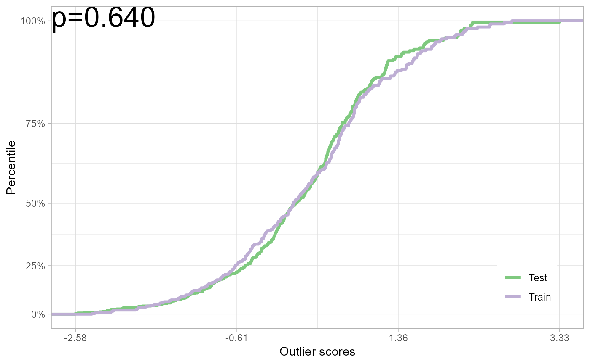

Plot result of test for no adverse shift.
# S3 method for outlier.test
plot(x, ...)A outlier.test object from a D-SOS test.
Placeholder to be comptatible with S3 `plot` generic.
A ggplot2 plot with outlier scores and p-value.
Other s3-method:
print.outlier.test()
# \donttest{
set.seed(12345)
os_train <- rnorm(n=3e2)
os_test <- rnorm(n=3e2)
test_to_plot <- at_from_os(os_train, os_test)
# Also: pt_from_os(os_train, os_test) for permutation test
plot(test_to_plot)

# }